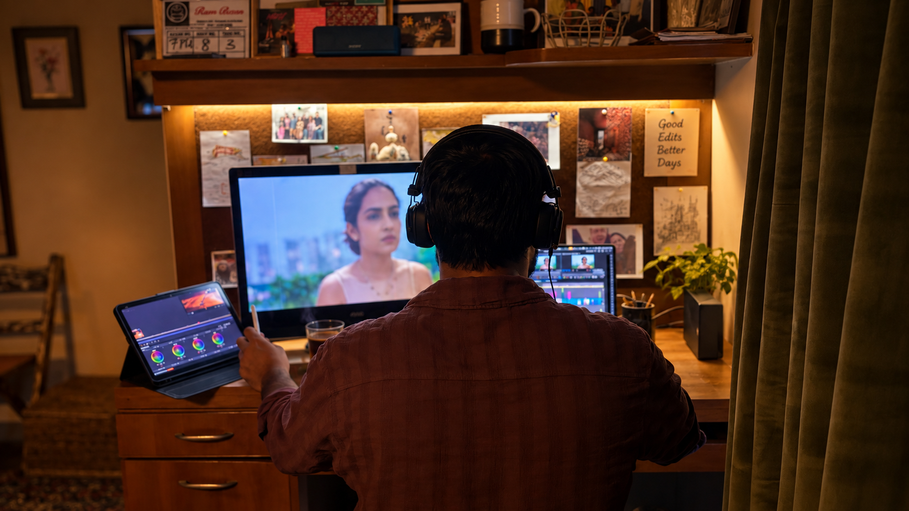

Official Teaser
00:36

Scene 7 • Shot 8 • Take 3 • Production Slate
An 18-minute narrative short film featuring Vaibhav Raj Gupta. Conceived, written, directed and edited with tight narrative escalation, character-driven cuts, and calculated comic tension.
Role
Writer / Director / Editor
Cast
Vaibhav Raj Gupta
Format
Narrative Fiction • 18 Min Short